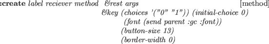
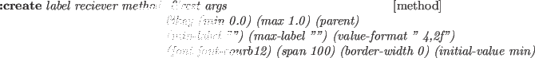

Subsections
A viewing object manages viewing coordinate system
whose origin is located at the position of a virtual camera,
-z axis is oriented to the objects observed, and xy-plane is the
projection screen.
Since viewing inherits class cascaded-coords,
it accepts coordinates transformation message
such as :translate, :rotate and :transform.
Also, it can be attached to another object derived from cascaded-coords,
allowing the simulation of the camera-on-mobile-object system.
The main purpose of viewing is to transform vectors represented in the world
to the camera coordinates system.
The transformation is taken in the opposite direction against usual coordinate
transformation where vectors in the local coordinates are transformed into the
representation in the world.
Therefore, viewing holds the inversed left-handed transformation in
the viewcoords slot, which is usually referred as the viewing coordinate system.
Figure 13:
viewing coords and projection planes
|

|
viewing [class]
:super cascaded-coords
:slots (viewcoords)
-
- defines the viewing transformation.
:viewpoint [method]
-
-
returns the position vector of the origin of this viewing.
:view-direction [method]
-
-
returns the vector from the origin of the viewing to the center of screen.
This is the z-axis direction of the viewing coordinates.
:view-up [method]
-
-
returns y-axis vector of this viewing represented in the world coords.
Y-axis is the upward direction in the viewport.
:view-right [method]
-
-
returns x-axis vector of this viewing represented in the world coords.
X-axis is in horizontal direction to the right in the viewport.
:look from &optional (to #f(0 0 0)) [method]
-
-
:look conveniently sets the viewing coords as the eye is located
at from and looking at to point.
:init &key :target #f(0 0 0) [method]
:view-direction nil
:view-up #f(0.0 0.0 1.0))
:view-right nil
&allow-other-keys
-
- Since viewing inherits cascaded-coords, all the :init parameters
such as :pos, :rot, :Euler, :rpy, etc. can be
used to specify the location and the orientation of the viewing coordinates.
However, viewing's :init provides easier way to determine the
rotation.
If only :target is given, view-line (-z axis) is determined to
pass the viewpoint and :target point, and the :view-right
vector is determined so that the x-axis is parallel to the xy-plane of the
world coordinates.
You may specify :view-direction instead of :target to get the
same effect.
If you give :view-up or :view-right parameter in addition to
:target or :view-direction,
you can determine all the three rotation parameters by yourself.
Class parallel-projection and perspective-projection process
projection transformation, which is represented with a 4X4 matrix,
i.e., the transformation is taken in the three dimensional homogeneous
coordinates.
Class projection is an abstract class for both of these.
Since these projection classes inherit the viewing class,
two coordinates transformation, world-to-viewing and projection
can be performed at the same time.
By sending the :project3 message with a 3D vector to a projection object,
a float-vector of four elements is returned.
Homo2normal function is used to convert this homogeneous vector
to the normal representation.
The result is a vector represented in so called normalized device coordinates
(NDC), in which a visible vector ranges within -1 to 1
in each of x,y, and z dimensions.
For the simulation of real cameras in a robot world,
the perspective projection is used more often than the parallel-projection.
Perspective-projection defines a few more parameters.
Screenx and screeny are the sizes of the window on the
viewing plane on which observed objects are projected,
and with the larger screen, the wider space is projected.
Viewdistance which defines the distance between the viewpoint
and the viewplane also concerns with the viewing angle.
The larger viewdistance maps the smaller region to the window on the view plane.
Hither and yon parameters determine the distance to the front and back
depth clipping planes.
Objects outside these two planes are clipped out.
Actually, this clipping procedure is performed by the viewport object.
projection [class]
:super viewing
:slots (screenx screeny hither yon projection-matrix)
-
- defines projection transformation with a 4x4 matrix.
:projection &optional pmat [method]
-
-
if pmat is given, it is set to the projection-matrix slot.
:projection returns the current 4x4 projection matrix.
:project vec [method]
-
-
Vec is a three-dimensional homogeneous float-vector of four elements.
Vec is transformed by projection-matrix,
and the resulted homogeneous representation is returned.
:project3 vec [method]
-
-
Vec is a normal 3D float-vector.
Vec is homogenized and transformed by projection-matrix,
and the resulted homogeneous representation is returned.
:view vec [method]
-
-
applies viewing transformation and projection transformation to vec
successively.
The resulted homogeneous representation is returned.
:screen xsize (&optional (ysize xsize)) [method]
-
-
changes the size of the viewing screen.
The larger the size, the wider view you get.
:hither depth-to-front-clip-plane [method]
-
-
determines the distance from the viewpoint to the front-clipping plane.
Objects before the front-clipping (hither) plane are clipped out.
:yon depth-to-back-clip-plane [method]
-
-
changes the distance between the viewpoint and
the back-clipping plane.
Objects behind the back-clipping (yon) plane are clipped out.
:aspect &optional ratio [method]
-
-
Aspect ratio is the ratio between screen-y and screen-x.
If ratio is given,
the aspect ratio is changed by setting screen-y to screen-x * ratio.
:aspect returns the current aspect ratio.
:init &key :hither 100.0 [method]
:yon 1000.0
:aspect 1.0
:screen 100.0
:screen-x screen
:screen-y (* screen-x aspect)
&allow-other-keys
-
- initializes viewing and projection.
parallel-viewing [class]
:super projection
:slots ()
-
- defines parallel projection.
Hid (the hidden-line elimination function)
cannot handle parallel projection.
:make-projection [method]
-
-
perspective-viewing [class]
:super projection
:slots (viewdistance)
-
- defines a perspective projection transformation.
:make-projection [method]
-
-
:ray u v [method]
-
-
returns the normalized direction-vector pointing (u,v) on
the normalized screen from the viewpoint.
:viewdistance &optional vd [method]
-
-
Viewdistance is the distance between viewpoint and the screen.
If vd is given, it is set to viewdistance.
The viewdistance corresponds to the focal length of a camera.
The greater the viewdistance, the more zoomed-up view you get.
:viewdistance returns the current viewdistance.
:view-angle &optional ang [method]
-
-
set screen size so that the prospective angle of the diagonal of the
screen becomes ang radian.
Note that angles somewhat between 20 degree (approx. 0.4 rad.)
and 50 degree (0.9 rad.) can generate a natural perspective view.
Wider angle generates a skewed view, and narrower a flat view like
orthogonal (parallel) viewing.
:view-angle returns current or new view angle in radian.
:zoom &optional scale [method]
-
-
If scale is given, the screen is changed relatively to the
current size by scale
(the viewdistance is unchanged).
If you give 0.5 for scale, you get two times as wide view as before.
:zoom returns new view angle in radian.
:lookaround alfa beta [method]
-
-
translates and rotates the viewpoint.
The center of rotation is taken at
the midst of the hither plane and the yon plane on the viewline.
The viewing coordinates is rotated alfa radian around world's z-axis
and beta radian around x-axis locally.
:lookaround allows you to move around the object in the center of
viewing.
:look-body bodies [method]
-
-
changes view direction, screen sizes, and hither/yon so that all the
bodies fit in the viewport.
Viewpoint does not change.
View direction is chosen so that the viewing line penetrate the center
of the bounding box of all bodies.
:init &key (:viewdistance 100.0) &allow-other-keys [method]
-
-
Class viewport performs three-dimensional viewport clipping in
the normalized device coordinates, and maps the result into the device
dependent coordinates.
The viewport is the term representing the visible rectangular area
on a screen.
The physical size (dots in x and y) of a viewport should be given with
:init message as the :width and :height arguments.
:xcenter and :ycenter arguments determine
the physical location of the viewport.
These two parameters actually decide the location where objects are drawn
on the screen when you are using a primitive display device like tektronics
4014 on which every dimension must be given absolutely to the origin of the
screen.
If you are using more sophisticated display device like Xwindows where
locations can be determined relatively to the parent window, you need not
to change viewport's parameters to move the viewport.
These parameters are independent of the actual display location.
Viewport class assumes the origin of the viewport at the lower-left corner of
the rectangular area and y-axis extends to the upper direction.
Unfortunately, in many window systems and display devices, the origin is taken
at the upper-left corner and y-axis extends to the lower direction.
To work around this problem, a negative value should be given to the
:height parameter.
homo-viewport-clip v1 v2 [function]
-
-
V1 and v2, which are two homogeneous vectors with four elements,
represent a line in 3-D space.
The line is clipped at the boundary of
,
and a list of two vectors are returned.
If the line lies completely outside the viewport, NIL is returned.
viewport [class]
:super coordinates
:slots ()
-
- viewport transformation maps the NDC (normalized device coordinates)
to device specific coordinates.
Inheriting the coordinates class, the viewport defines
the size and the relative position of the projection screen.
:xcenter &optional xcenter [method]
-
-
X coordinates of the center of this viewport.
:ycenter &optional ycenter [method]
-
-
Y coordinates of the center of this viewport.
:size &optional size [method]
-
-
List of sizes in x direction and y direction.
:width &optional width [method]
-
- width of this viewport.
:height &optional height [method]
-
- height of this viewport.
:screen-point-to-ndc p [method]
-
-
p is a float-vector representing the location in the physical screen.
p is transformed into the representation in the normalized-device
coordinates.
:ndc-point-to-screen p [method]
-
-
NDC representation in this viewport, p, is transformed into
the physical address on the screen.
:ndc-line-to-screen p1 p2 &optional (do-clip t) [method]
-
-
Two 3D float-vectors, p1 and p2, define a line in NDC.
These two end points are transformed to the representation in
the screen space.
If do-clip is non-nil, the line is clipped.
:init &key (xcenter 100) (ycenter 100) (size 100)
(width 100) (height 100) [method]
-
- makes a new viewport object.
To get a drawing on a screen, four objects are needed:
(1) objects to be drawn, (2) a viewing which defines the viewing coordinates
and the projection, (3) a viewport for clipping in NDC and
the transformation from NDC to physical screen coordinates,
and (4) a viewsurface which performs drawing functions on
a physical display device.
A viewer object holds a viewing, a viewport and a viewsurface object,
and controls successive coordinates transformation.
Functions draw and hid described in section 17.5
use the instances of viewer.
viewer [class]
:super object
:slots (eye :type viewint)
(port :type viewport)
(surface :type viewsurface)
-
- defines the cascaded coordinates transformation from the viewing via
the viewport to the viewsurface.
:viewing &rest msg [method]
-
-
If msg is given, msg is sent to the viewing (eye) object,
Otherwise, the viewing (eye) object is returned.
:viewport &rest msg [method]
-
-
If msg is given, msg is sent to the viewport (port) object,
Otherwise, the viewport (port) object is returned.
:viewsurface &rest msg [method]
-
-
If msg is given, msg is sent to the viewsurface (surface) object,
Otherwise, the viewsurface (surface) object is returned.
:adjust-viewport [method]
-
-
When the size of viewsurface has been changed, :adjust-viewport
changes viewport transformation sending a proper message to port.
:resize width height [method]
-
-
changes the size of viewsurface by sending :resize message to the viewsurface
and :size message to viewport.
:draw-line-ndc p1 p2 &optional (do-clip t) [method]
-
-
draws a line whose two end points p1, p2 are defined in NDC.
:draw-polyline-ndc polylines &optional color [method]
-
-
draws polylines whose end points are defined in NDC.
:draw-star-ndc center &optional (size 0.01) color [method]
-
-
draws a cross mark in NDC.
:draw-box-ndc low-left up-right &optional color [method]
-
-
draws a rectangle in NDC.
:draw-arc-ndc point width height angle1 angle2 [color] [method]
-
-
draws an arc in NDC.
The viewsurface object bound in this viewer must accept :arc message.
:draw-fill-arc-ndc point width height angle1 angle2 [color] [method]
-
-
draws a filled-arc in NDC.
:draw-string-ndc position string [color] [method]
-
-
draws string at position defined in NDC.
:draw-image-string-ndc position string [color] [method]
-
-
:draw-rectangle-ndc position width height [color] [method]
-
-
:draw-fill-rectangle-ndc point width height [color] [method]
-
-
:draw-line p1 p2 &optional (do-clip t) [method]
-
-
draws a line whose two end points p1, p2 are defined in the world
coordinates.
:draw-star position &optional (size 0.01) color [method]
-
-
draws a cross at position located in the world.
:draw-polyline vlist &optional color [method]
-
-
draws polylines whose end points vlist are defined in the world.
:draw-box center &optional (size 0.01) [method]
-
-
draws a rectangular at centerin the world.
:draw-arrow p1 p2 [method]
-
-
draws an arrow from p1 to p2.
:draw-edge edge [method]
-
-
:draw-edge-image edge-image [method]
-
-
:draw-faces face-list &optional (normal-clip nil) [method]
-
-
:draw-body body &optional (normal-clip nil) [method]
-
-
:draw-axis coordinates &optional size [method]
-
-
draws coordinates axes whose length is size.
:draw &rest things [method]
-
-
draws 3D geometric objects.
If the object is a 3D float-vector, a small cross is drawn at the position.
If it is a list of 3D float-vectors, it is taken as a polyline.
If thing accepts :draw message,
the method is invoked with this viewer as its argument.
If the object defines :drawners method,
the :draw message is sent to the result of :drawners.
Line, edge, polygon, face, and body objects are drawn
by corresponding :draw-xxx methods defined in viewer.
:erase &rest things [method]
-
-
draws things with background color.
:init &key :viewing :viewport :viewsurface [method]
-
-
sets viewing, viewport and viewsurface to eye, port,
and surface slots of this viewer.
view &key (size 500) (width size) (height size)[function]
(x 100) (y 100)
(title "eusx")
(border-width 3)
(background 0)
(viewpoint #f(300 200 100)) (target #f(0 0 0))
(viewdistance 5.0) (hither 100.0) (yon 10000.0)
(screen 1.0) (screen-x screen) (screen-y screen)
(xcenter 500) (ycenter 400)
-
- creates a new viewer and pushes it in *viewers* list.
Drawings
draw [viewer] &rest thing [function]
-
-
draws things in viewer.
Thing can be any of coordinates, body, face, edge, float-vector,
list of two float-vectors.
If you are running eusx,
(progn (view) (draw (make-cube 10 20 30)))
draws a cube in a xwindow.
draw-axis [viewer] [size] &rest thing [function]
-
-
draws coordinate-axes of things in viewer with size
as the length of each coordinates-axis.
Thing can be any object derived from coordinates.
draw-arrow p1 p2 [function]
-
-
draws an arrow pointing from p1 to p2 in *viewer*.
hid [viewer] &rest thing [function]
-
- draws hidden-line eliminated image in viewer.
Thing can be of face or body.
hidd [viewer] &rest thing [function]
-
-
is same as hid, except that hidd draws hidden lines
with dashed-lines.
hid2 body-list viewing [function]
-
-
Generate hidden-line eliminated image represented by edge-image objects.
The result is bound to *hid*.
render &key bodies faces (viewer *viewer*) (lights *light-sources*)
(colormap *render-colormap*) (y 1.0) [function]
-
-
does ray-tracing for bodies and faces and generates
hidden-surface removed images.
viewing, viewport, and viewsurface are taken from viewer.
lights is a list of light-source objects.
colormap is xwindow's colormap object.
Each of bodies and faces must have color attribute assigned.
This can be done by sending :color message with the name of
color LUT defined in the colormap.
Currently this function works only in Xlib environment.
See examples in demo/renderdemo.l.
make-light-source pos &optional (intensity 1.0) [function]
-
-
make a light-source object located at pos.
intensity is magnifying ratio which multiplies default light
intensity. In order to determine the intensity more precisely,
use :intensity method of a light-source.
tektro file &rest forms [macro]
-
-
opens file for *tektro-port* stream, and evaluates forms.
This is used in order to redirect the output of tektro drawings to a file.
kdraw file &rest forms [macro]
-
-
Kdraw is a macro to produce a [ik]draw-readable postscript file.
Kdraw opens file in :output mode,
makes a kdraw-viewsurface and a viewport with which *viewer* is replaced,
and evaluates forms.
Each of forms is a call to any of drawing functions like draw or hid.
Drawing messages from these forms are redirected to a kdraw-viewsurface,
which transforms the messages into postscript representations
that idraw or kdraw can recognize, and stores them in file.
When idraw or kdraw is invoked and file is opened,
you see the identical figure you drew in a EusViewer window.
The figure can be modified by idraw's facilities,
and the final drawing can be incorporated into a LATEXdocument
using the epsfile environment.
pictdraw file &rest forms [macro]
-
-
Pictdraw is a macro to produce picture files in the Macintosh
PICT format.
pictdraw file &rest forms [macro]
-
-
Pictdraw is a macro to produce picture files for Macintosh
in PICT format.
Pictdraw opens file in :output mode
makes a pictdraw-viewsurface and a viewport with which *viewer* is replaced,
and evaluates forms.
Each of forms is a call to any of drawing functions like draw or hid.
Drawing messages from these forms are redirected to a kdraw-viewsurface,
which transforms the messages into PICT format
that macdraw or teachtext of Macintosh can recognize,
and stores them in file.
hls2rgb hue lightness saturation &optional (range 255) [function]
-
-
Color representation in HLS (Hue, Lightness, and Saturation)
is converted to RGB representation.
HLS is often referred to as HSL.
Hue represents a color around a rainbow circle (from 0 to 360).
0 for red, 45 for yellow, 120 for green, 240 for blue, 270 for magenta,
and 360 again for red, etc.
Lightness is a value between 0.0 and 1.0, representing
from black to white.
The color of lightness value of 0 is always black regardless to
the hue and saturation, and the lightness value 1.0 is always white.
Saturation is a value between 0.0 and 1.0, and represents the
strength of the color.
The greater the saturation value, the divider the color,
and small saturation values generate weak, dull tone colors.
Range limits the RGB values.
If you are using a color display which can assign 8bit value to each of
red, green and blue, range should be 255.
If you use Xwindow, which virtually assigns 16bits integers to RGB,
you should specify range to 65535.
Note the difference between HSV and HLS.
In HLS, vivid (rainbow) colors are defined with lightness=0.5.
rgb2hls red green blue &optional (range 255) [function]
-
-
RGB representation of a color is converted into the corresponding
representation in HLS.
Animation
EusLisp's animation facility provides the pseudo real-time
graphics on stock workstations without graphics accelerators.
The basic idea is the quick playback of a series of images which have been
generated after long computation.
Images are retained in two ways:
one is to keep a number of xwindow pixmaps each of which holds a complete
pixel image, and the other is to keep line segment data obtained by
hidden-line elimination.
The former is faster and the only way for rendered images,
but not suitable for a long animation since it requires much memory
in the X server.
The latter is more memory efficient and suitable for storing data in disks,
but the performance is degraded
when the number of line segments increases.
In either way, the user provide a function which gives new configurations
to the objects to be drawn and generates drawing on *viewer*.
pixmap-animation calls this function as many times as
specified by the count argument.
After each call, the content of *viewsurface*, which is assumed to
be an xwindow, is copied to a newly created Xwindow pixmap.
These pixmaps are played back by playback-pixmaps.
Similarly, hid-lines-animation extracts visible line segments
from the result of hid, and accumulates them in a list.
The list is then played back by playback-hid-lines.
Following functions are defined in llib/animation.l, and
demo/animdemo.l contains a sample animation program
using hid-lines-animation on the ETA3 manipulator model.
pixmap-animation count &rest forms [macro]
-
-
forms are evaluated count times.
After each evaluation, the content of *viewsurface* is copied
in a new pixmap. A list of count pixmaps is returned.
playback-pixmaps pixmaps &optional (surf *viewsurface*) [function]
-
-
Each pixmap in the pixmaps list is copied to surf successively.
hid-lines-animation count &rest forms [macro]
-
-
forms, which are assumed to include call(s) to hid,
are evaluated count times.
After each evaluation,
the result of hid held in *hid* is scanned and visible segments
are collected in a list of point pairs.
A list of length count is returned.
playback-hid-lines lines &optional (view *viewer*) [function]
-
-
lines is a list of lists of point pairs.
draws lines successively on view.
Double buffering technique allocating another pixmap
is used to generate flicker-free animation.
list-visible-segments hid-result [function]
-
-
collects visible segments from the list of edge-images hid-result.
Travis CI User
2017-03-07